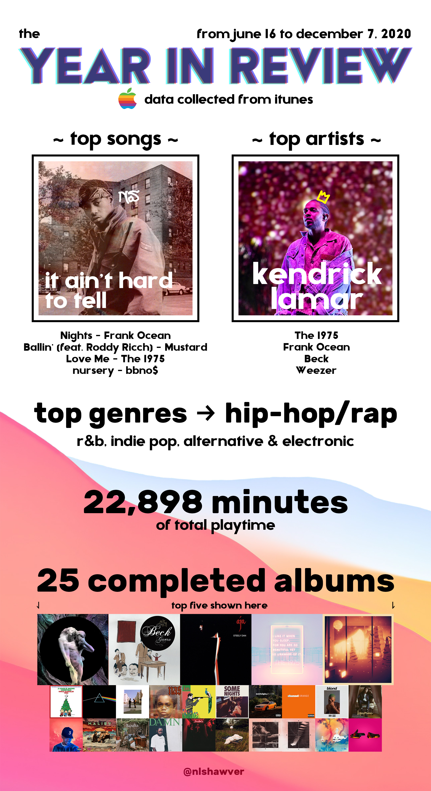
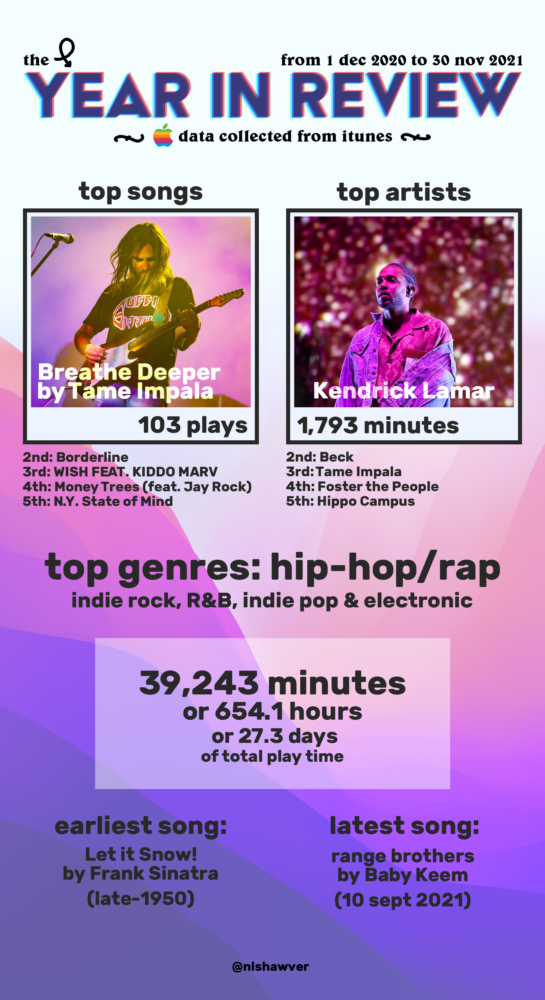

For a little backstory before I reveal how typical my music taste was this past year, I'd like to share why I'm not being normal like everyone else and just posting a couple slides of my Spotify Wrapped.
Essentially, by discovering at a similar time, both the incredible movie Baby Driver—which just so happens to have an iPod as a focal piece to the main character—and the youtube channel DankPods, which allowed me to update and modify an iPod with increased storage, I have reverted all the way back to using iTunes and a 5th generation iPod as my primary source of music.
This might sound really stupid from an outside perspective.
Anyways, I really love the prospect of having an actual dedicated music player, rather than a multi-function phone that is really only good at the things its meant for (and loads of distractions). Additionally—and while it's sort of a high-class issue—I can control exactly what quality audio I get from that iPod. My dad, in 2006, just so happened to pick the most popular iPod up to that point, and it's widely considered the highest quality one at that. It's a sort of technical thing with the digital to analog converter, and lots of discussions that belong on the audiophile subreddit... but it's a sort of piece of mind thing. Yeah, it can't play FLACs, probably the best audio format there is, but there's both WAV and ALAC for any uncompressed music you might have.
And also it is amazing getting those looks of utter confusion at the prospect of a teenager in 2021 using an iPod from 2006. It's stupid, and loaded with vanity, but I love it.
So that has been a brief summation as to why I don't have a Spotify Wrapped. I technically have one, but there's only been a couple hundred minutes listened on it when I didn't have my iPod on me. Therefore, using the back-end of iTunes with all the information about total plays, and a lot of handiwork in Excel, for both 2020 and 2021 I've made my own photoshop graphics for my own sort of 'year in review'. It felt simple and a bit childish last year, but looking at Spotify's design language this year I can't help but feel superior to a billion dollar company.
Anyways— here they are, side by side; 2020 compared to 2021:
 fyi: I don't have the 'completed albums' section on this year's version due to the fact that I really didn't listen to much outside of just playlists. yes, I am sad about that as well.
I consider both of these pretty typical of the genres of music I listen to most, and it makes sense to me. I was surprised how close Beck was to Kendrick Lamar in terms of listening time this year though, less than 200 minutes difference. The only thing that stuck out to me was the fact that nursery by bbno$ was so high up for 2020. I liked that song then and now, but I think I might have over-done it, and it has sort of grown stale on me recently.
So yeah, that's pretty much any necessary backstory, hopefully I'll be back next year with some more plays and way more albums listened to ;)